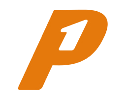

We zijn natuurlijk trots op al onze mooie projecten, maar onderstaande projecten willen we graag uitlichten
Voor Nuon waren we onderdeel van het team dat een nieuw ontwerp heeft gemaakt voor Nuon.nl. Naast een nieuw CMS en een contentmigratie, was er een grote update van het design nodig, zowel visueel als technisch.
Lees meer over het werk dat we deden voor Nuon
In navolging van de verschillende Second Screens van de NOS, heeft ook Eredivisie Live een speciale webapp ontwikkeld om live de voetbalwedstrijden te volgen. Met de livedata van Infostrada Sports is een innovatieve app voor tablets den desktop gemaakt.
Lees meer over de Eredivisie Live Sidekick
In opdracht van Rhinofly hebben we de frontend verzorgd voor Werken voor Nederland, het vacature- en wervingsplatform van de Rijksoverheid. Op deze website staan alle vacatures binnen de Rijskoverheid en kan de bezoeker meer achtergrondinformatie vinden over het werken bij de overheid.
Lees verder over ons project voor Werken Voor Nederland